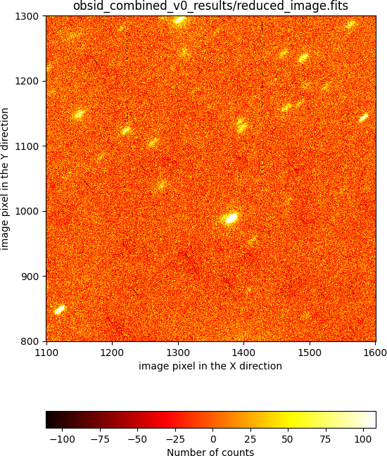

Preliminary combination¶
Warning
Before continuing, make sure that you have already initialize the file tree structure by following the instructions provided in the Initial file tree section of this documentation.
Assume you want to combine the following raw images obtained using a dithered pattern of 7 positions iterated twice (i.e., you have gathered a total of 14 images):
0001877553-20181217-EMIR-STARE_IMAGE.fits
0001877559-20181217-EMIR-STARE_IMAGE.fits
0001877565-20181217-EMIR-STARE_IMAGE.fits
0001877571-20181217-EMIR-STARE_IMAGE.fits
0001877577-20181217-EMIR-STARE_IMAGE.fits
0001877583-20181217-EMIR-STARE_IMAGE.fits
0001877589-20181217-EMIR-STARE_IMAGE.fits
0001877595-20181217-EMIR-STARE_IMAGE.fits
0001877601-20181217-EMIR-STARE_IMAGE.fits
0001877607-20181217-EMIR-STARE_IMAGE.fits
0001877613-20181217-EMIR-STARE_IMAGE.fits
0001877619-20181217-EMIR-STARE_IMAGE.fits
0001877625-20181217-EMIR-STARE_IMAGE.fits
0001877631-20181217-EMIR-STARE_IMAGE.fits
Those files (together with some additional files that you will need to follow this imaging example) are available as a compressed tgz file: pyemir_imaging_tutorial_v3.tgz.
The preliminary combination of these 14 images will be carried out in two steps:
Step 1: basic reduction of each individual image (bad-pixel masking and flatfielding)
Step 2: actual combination of the images
Step 1: basic reduction of individual exposures¶
Move to the directory where you have deployed the initial file tree structure containing the basic PyEmir calibration files (see Initial file tree).
Decompress there the previously mentioned tgz file:
(emir) $ tar zxvf pyemir_imaging_tutorial_v3.tgz
...
...
(emir) $ rm pyemir_imaging_tutorial_v3.tgz
This action should have populated the file tree with the
14 scientific raw FITS (placed wihtin the data
subdirectory) and some additional auxiliary files:
(emir) $ tree
.
├── control.yaml
├── data
│ ├── 0001877553-20181217-EMIR-STARE_IMAGE.fits
│ ├── 0001877559-20181217-EMIR-STARE_IMAGE.fits
│ ├── 0001877565-20181217-EMIR-STARE_IMAGE.fits
│ ├── 0001877571-20181217-EMIR-STARE_IMAGE.fits
│ ├── 0001877577-20181217-EMIR-STARE_IMAGE.fits
│ ├── 0001877583-20181217-EMIR-STARE_IMAGE.fits
│ ├── 0001877589-20181217-EMIR-STARE_IMAGE.fits
│ ├── 0001877595-20181217-EMIR-STARE_IMAGE.fits
│ ├── 0001877601-20181217-EMIR-STARE_IMAGE.fits
│ ├── 0001877607-20181217-EMIR-STARE_IMAGE.fits
│ ├── 0001877613-20181217-EMIR-STARE_IMAGE.fits
│ ├── 0001877619-20181217-EMIR-STARE_IMAGE.fits
│ ├── 0001877625-20181217-EMIR-STARE_IMAGE.fits
│ ├── 0001877631-20181217-EMIR-STARE_IMAGE.fits
│ ├── master_bpm.fits
│ ├── master_dark_zeros.fits
│ ├── master_flat_ones.fits
│ ├── master_flat_spec.fits
│ ├── rect_wpoly_MOSlibrary_grism_H_filter_H.json
│ ├── rect_wpoly_MOSlibrary_grism_J_filter_J.json
│ ├── rect_wpoly_MOSlibrary_grism_K_filter_Ksp.json
│ ├── rect_wpoly_MOSlibrary_grism_LR_filter_HK.json
│ ├── rect_wpoly_MOSlibrary_grism_LR_filter_YJ.json
│ └── user_offsets.txt
├── dithered_ini.yaml
├── dithered_v0.yaml
├── dithered_v1.yaml
├── dithered_v2.yaml
├── dithered_v3.yaml
├── dithered_v4.yaml
└── dithered_v5.yaml
You can easily examine the header of the scientific FITS images using the
astropy utility fitsheader:
(emir) $ fitsheader data/0001877*.fits -k obsblock -k imgobbl -k nimgobbl -k object -k exptime -k readmode -f
filename OBSBLOCK IMGOBBL NIMGOBBL OBJECT EXPTIME READMODE
---------------------------------------------- -------- ------- -------- ------ -------- --------
data/0001877553-20181217-EMIR-STARE_IMAGE.fits 1 1 7 TEST 29.99926 RAMP
data/0001877559-20181217-EMIR-STARE_IMAGE.fits 1 2 7 TEST 29.99926 RAMP
data/0001877565-20181217-EMIR-STARE_IMAGE.fits 1 3 7 TEST 29.99926 RAMP
data/0001877571-20181217-EMIR-STARE_IMAGE.fits 1 4 7 TEST 29.99926 RAMP
data/0001877577-20181217-EMIR-STARE_IMAGE.fits 1 5 7 TEST 29.99926 RAMP
data/0001877583-20181217-EMIR-STARE_IMAGE.fits 1 6 7 TEST 29.99926 RAMP
data/0001877589-20181217-EMIR-STARE_IMAGE.fits 1 7 7 TEST 29.99926 RAMP
data/0001877595-20181217-EMIR-STARE_IMAGE.fits 2 1 7 TEST 29.99926 RAMP
data/0001877601-20181217-EMIR-STARE_IMAGE.fits 2 2 7 TEST 29.99926 RAMP
data/0001877607-20181217-EMIR-STARE_IMAGE.fits 2 3 7 TEST 29.99926 RAMP
data/0001877613-20181217-EMIR-STARE_IMAGE.fits 2 4 7 TEST 29.99926 RAMP
data/0001877619-20181217-EMIR-STARE_IMAGE.fits 2 5 7 TEST 29.99926 RAMP
data/0001877625-20181217-EMIR-STARE_IMAGE.fits 2 6 7 TEST 29.99926 RAMP
data/0001877631-20181217-EMIR-STARE_IMAGE.fits 2 7 7 TEST 29.99926 RAMP
Note that:
the keyword
OBSBLOCKgives the observing block number.the keyword
NIMGOBBLprovides the total number of images in each dithering pattern (7 in this case).IMGOBBLindicates the sequential number within each pattern.
The first step in the reduction process will be the bad-pixel mask and flatfield corrections.
Note
Remember that the numina script is the interface with GTC pipelines.
In order to execute PyEmir recipes you should use type something like:
(emir) $ numina run <observation_result_file.yaml> -r <requirements_file.yaml>
where <observation_result_file.yaml> is an observation result file in
YAML format, and <requirements_files.yaml> is a requirements file, also
in YAML format.
YAML is a human-readable data serialization language (for details see YAML Syntax)
The deployed file tree already contains the files required
to execute the initial reduction recipe needed in this case: the observation
result file dithered_ini.yaml and the requirements file control.yaml.
Let’s have a look to each of them separately.
The observation result file: dithered_ini.yaml
This is what we call an observation result file, which basically contains the reduction recipes to be applied and the images involved. Note that this particular file contains 14 blocks, one for each individual image.
Each block is separated by a line containing just three dashes (---):
Do not forget the separation line
---between blocks (otherwise the pipeline will not recognize where one block ends and the next one begins).This separation line must not appear after the last block.
The contents of this file is displayed below, highlighting the first block (first six lines):
1 2 3 4 5 6 7 8 9 10 11 12 13 14 15 16 17 18 19 20 21 22 23 24 25 26 27 28 29 30 31 32 33 34 35 36 37 38 39 40 41 42 43 44 45 46 47 48 49 50 51 52 53 54 55 56 57 58 59 60 61 62 63 64 65 66 67 68 69 70 71 72 73 74 75 76 77 78 79 80 81 82 83 84 85 86 87 88 89 90 91 92 93 94 95 96 97 | id: _0001877553
instrument: EMIR
mode: STARE_IMAGE
frames:
- 0001877553-20181217-EMIR-STARE_IMAGE.fits
enabled: True
---
id: _0001877559
instrument: EMIR
mode: STARE_IMAGE
frames:
- 0001877559-20181217-EMIR-STARE_IMAGE.fits
enabled: True
---
id: _0001877565
instrument: EMIR
mode: STARE_IMAGE
frames:
- 0001877565-20181217-EMIR-STARE_IMAGE.fits
enabled: True
---
id: _0001877571
instrument: EMIR
mode: STARE_IMAGE
frames:
- 0001877571-20181217-EMIR-STARE_IMAGE.fits
enabled: True
---
id: _0001877577
instrument: EMIR
mode: STARE_IMAGE
frames:
- 0001877577-20181217-EMIR-STARE_IMAGE.fits
enabled: True
---
id: _0001877583
instrument: EMIR
mode: STARE_IMAGE
frames:
- 0001877583-20181217-EMIR-STARE_IMAGE.fits
enabled: True
---
id: _0001877589
instrument: EMIR
mode: STARE_IMAGE
frames:
- 0001877589-20181217-EMIR-STARE_IMAGE.fits
enabled: True
---
id: _0001877595
instrument: EMIR
mode: STARE_IMAGE
frames:
- 0001877595-20181217-EMIR-STARE_IMAGE.fits
enabled: True
---
id: _0001877601
instrument: EMIR
mode: STARE_IMAGE
frames:
- 0001877601-20181217-EMIR-STARE_IMAGE.fits
enabled: True
---
id: _0001877607
instrument: EMIR
mode: STARE_IMAGE
frames:
- 0001877607-20181217-EMIR-STARE_IMAGE.fits
enabled: True
---
id: _0001877613
instrument: EMIR
mode: STARE_IMAGE
frames:
- 0001877613-20181217-EMIR-STARE_IMAGE.fits
enabled: True
---
id: _0001877619
instrument: EMIR
mode: STARE_IMAGE
frames:
- 0001877619-20181217-EMIR-STARE_IMAGE.fits
enabled: True
---
id: _0001877625
instrument: EMIR
mode: STARE_IMAGE
frames:
- 0001877625-20181217-EMIR-STARE_IMAGE.fits
enabled: True
---
id: _0001877631
instrument: EMIR
mode: STARE_IMAGE
frames:
- 0001877631-20181217-EMIR-STARE_IMAGE.fits
enabled: True
|
The
idvalue is an arbitrary label that is employed to generate the name of two auxiliary subdirectories. In this example the reduction of the first block will generate two subdirectories namedobsid_0001877553_workandobsid_0001877553_results, where the intermediate results and the final results are going to be stored, respectively. Note that we have arbitrarily chosen the 10 digits of the unique running number assigned to each image obtained with the GTC to build the label.Not surprisingly, the key
instrumentis set to EMIR (do not forget that Numina also is at present also employed to reduce MEGARA data, and hopefully, future GTC instruments).The key
modeindicates the identification of the reduction recipe (STARE_IMAGEin this example).The key
frameslists the images to be combined prior to the execution of the reduction recipe. In this case a single image has been obtained at each point of the dithering pattern before moving to the next location within the pattern. For that reason a single image appears in each block.The key
enabled: Trueindicates that this block is going to be reduced. As it is going to be shown later, the user can easily activate/deactivate the execution of particular reduction recipes (i.e. blocks in this file) just by modifying this flag.
Warning
Since the generation of the file dithered_ini.yaml can be cumbersome,
specially
when the number of images is large, an auxiliary script has been
incorporated in PyEmir in order to help in its generation.
In particular, the file used in this example can be easily created using a few simple commands:
(emir) $ cd data/
(emir) $ ls 0001877*fits > list_images.txt
(emir) $ cd ..
(emir) $ pyemir-generate_yaml_for_dithered_image \
data/list_images.txt --step 0 --outfile dithered_ini.yaml
Note that a temporary file list_images.txt is created with a list of the
the individual exposures. The script
pyemir-generate_yaml_for_dithered_image reads that file and generate the
observation result file dithered_ini.yaml (the parameter --step 0
indicates that the reduction recipe to be used here is STARE_IMAGE,
which corresponds to the preliminary image reduction).
The requirements file: control.yaml
This is the requirements file, containing the expected name of generic calibration files. You do not need to modify anything here.
1 2 3 4 5 6 7 8 9 10 11 12 13 14 15 16 17 18 19 20 21 22 | version: 1
products:
EMIR:
- {id: 2, type: 'MasterBadPixelMask', tags: {}, content: 'master_bpm.fits'}
- {id: 3, type: 'MasterDark', tags: {}, content: 'master_dark_zeros.fits'}
- {id: 4, type: 'MasterIntensityFlat', tags: {}, content: 'master_flat_spec.fits'}
- {id: 5, type: 'MasterSpectralFlat', tags: {}, content: 'master_flat_spec.fits'}
- {id: 11, type: 'MasterRectWave', tags: {grism: J, filter: J}, content: 'rect_wpoly_MOSlibrary_grism_J_filter_J.json'}
- {id: 12, type: 'MasterRectWave', tags: {grism: H, filter: H}, content: 'rect_wpoly_MOSlibrary_grism_H_filter_H.json'}
- {id: 13, type: 'MasterRectWave', tags: {grism: K, filter: Ksp}, content: 'rect_wpoly_MOSlibrary_grism_K_filter_Ksp.json'}
- {id: 14, type: 'MasterRectWave', tags: {grism: LR, filter: YJ}, content: 'rect_wpoly_MOSlibrary_grism_LR_filter_YJ.json'}
- {id: 15, type: 'MasterRectWave', tags: {grism: LR, filter: HK}, content: 'rect_wpoly_MOSlibrary_grism_LR_filter_HK.json'}
- {id: 21, type: 'RefinedBoundaryModelParam', tags: {grism: J, filter: J}, content: 'final_multislit_bound_param_grism_J_filter_J.json'}
- {id: 22, type: 'RefinedBoundaryModelParam', tags: {grism: H, filter: H}, content: 'final_multislit_bound_param_grism_H_filter_H.json'}
- {id: 23, type: 'RefinedBoundaryModelParam', tags: {grism: K, filter: Ksp}, content: 'final_multislit_bound_param_grism_K_filter_Ksp.json'}
- {id: 24, type: 'RefinedBoundaryModelParam', tags: {grism: LR, filter: YJ}, content: 'final_multislit_bound_param_grism_LR_filter_YJ.json'}
- {id: 25, type: 'RefinedBoundaryModelParam', tags: {grism: LR, filter: HK}, content: 'final_multislit_bound_param_grism_LR_filter_HK.json'}
requirements:
EMIR:
default:
FULL_DITHERED_IMAGE:
- {name: 'x_offsets', tags: {}, content: 'ref_object_pos.txt'}
|
Numina execution
You are ready to execute the reduction recipe indicated in the file
dithered_ini.yaml (in this case the reduccion recipe named
STARE_IMAGE):
(emir) $ numina run dithered_ini.yaml -r control.yaml
...
...
After the execution of the previous command line, two subdirectories for each block should have appeared:
(emir) $ ls
control.yaml obsid_0001877565_results/ obsid_0001877601_work/
data/ obsid_0001877565_work/ obsid_0001877607_results/
dithered_ini.yaml obsid_0001877571_results/ obsid_0001877607_work/
dithered_v0.yaml obsid_0001877571_work/ obsid_0001877613_results/
dithered_v1.yaml obsid_0001877577_results/ obsid_0001877613_work/
dithered_v2.yaml obsid_0001877577_work/ obsid_0001877619_results/
dithered_v3.yaml obsid_0001877583_results/ obsid_0001877619_work/
dithered_v4.yaml obsid_0001877583_work/ obsid_0001877625_results/
dithered_v5.yaml obsid_0001877589_results/ obsid_0001877625_work/
obsid_0001877553_results/ obsid_0001877589_work/ obsid_0001877631_results/
obsid_0001877553_work/ obsid_0001877595_results/ obsid_0001877631_work/
obsid_0001877559_results/ obsid_0001877595_work/
obsid_0001877559_work/ obsid_0001877601_results/
The work subdirectories
All the relevant images (scientific and calibrations) involved in the reduction
of a particular block of the observation result file are copied into the
work subdirectories in order to preserve the original files.
In particular, for the first block:
(emir) $ tree obsid_0001877553_work/
obsid_0001877553_work/
├── 0001877553-20181217-EMIR-STARE_IMAGE.fits
├── index.pkl
├── mask_bpm.fits
├── master_dark_zeros.fits
└── master_flatframe.fits
When disk space is an issue, it is possible to execute numina indicating that
links (instead of actual copies of the original raw files) must be placed in the
``work`` subdirectory. This behaviour is set using the parameter
--link-files:
(emir) $ numina run dithered_ini.yaml --link-files -r control.yaml
...
...
(emir) $ tree obsid_0001877553_work/
obsid_0001877553_work/
├── 0001877553-20181217-EMIR-STARE_IMAGE.fits -> /Users/cardiel/w/GTC/emir/work/z_tutorials_201907/x/data/0001877553-20181217-EMIR-STARE_IMAGE.fits
├── index.pkl
├── master_bpm.fits -> /Users/cardiel/w/GTC/emir/work/z_tutorials_201907/x/data/master_bpm.fits
├── master_dark_zeros.fits -> /Users/cardiel/w/GTC/emir/work/z_tutorials_201907/x/data/master_dark_zeros.fits
└── master_flat_spec.fits -> /Users/cardiel/w/GTC/emir/work/z_tutorials_201907/x/data/master_flat_spec.fits
The results subdirectories
These subdirectories store the result of the execution of the reduction recipes. In particular, for the first block:
$ tree obsid_0001877553_results/
obsid_0001877553_results/
├── processing.log
├── result.json
├── result_image.fits
└── task.json
Note that although all the reduced images receive the same name in all these
results subdirectories (for this reduction recipe result_image.fits),
there is no confusion because the subdirectory name contains a unique label for
each block in the observation result file.
Step 2: image combination¶
After the basic reduction performed in step 1, we can proceed with the
combination of the images. For that purpose a different reduction recipe must
be employed: FULL_DITHERED_IMAGE.
This task is carried out using a new
observation result file: dithered_v0.yaml: the first 97 lines of this new
file are the same as the content of the the previous file
dithered_ini.yaml, but setting enabled: False in each of the 14 blocks.
This flag indicates that the execution of the recipe STARE_IMAGE is no
longer necessary in any of the 14 blocks. Note however that these blocks must
explicitly appear in the observation result file, even though they imply no
actual reduction, because they define the location of the previously reduced
images.
The new observation result file dithered_v0.yaml contains a new block at
the end (see lines 99-121 below), that is responsible of the execution of the
combination of the previously reduced images:
1 2 3 4 5 6 7 8 9 10 11 12 13 14 15 16 17 18 19 20 21 22 23 24 25 26 27 28 29 30 31 32 33 34 35 36 37 38 39 40 41 42 43 44 45 46 47 48 49 50 51 52 53 54 55 56 57 58 59 60 61 62 63 64 65 66 67 68 69 70 71 72 73 74 75 76 77 78 79 80 81 82 83 84 85 86 87 88 89 90 91 92 93 94 95 96 97 98 99 100 101 102 103 104 105 106 107 108 109 110 111 112 113 114 115 116 117 118 119 120 121 | id: _0001877553
instrument: EMIR
mode: STARE_IMAGE
frames:
- 0001877553-20181217-EMIR-STARE_IMAGE.fits
enabled: False
---
id: _0001877559
instrument: EMIR
mode: STARE_IMAGE
frames:
- 0001877559-20181217-EMIR-STARE_IMAGE.fits
enabled: False
---
id: _0001877565
instrument: EMIR
mode: STARE_IMAGE
frames:
- 0001877565-20181217-EMIR-STARE_IMAGE.fits
enabled: False
---
id: _0001877571
instrument: EMIR
mode: STARE_IMAGE
frames:
- 0001877571-20181217-EMIR-STARE_IMAGE.fits
enabled: False
---
id: _0001877577
instrument: EMIR
mode: STARE_IMAGE
frames:
- 0001877577-20181217-EMIR-STARE_IMAGE.fits
enabled: False
---
id: _0001877583
instrument: EMIR
mode: STARE_IMAGE
frames:
- 0001877583-20181217-EMIR-STARE_IMAGE.fits
enabled: False
---
id: _0001877589
instrument: EMIR
mode: STARE_IMAGE
frames:
- 0001877589-20181217-EMIR-STARE_IMAGE.fits
enabled: False
---
id: _0001877595
instrument: EMIR
mode: STARE_IMAGE
frames:
- 0001877595-20181217-EMIR-STARE_IMAGE.fits
enabled: False
---
id: _0001877601
instrument: EMIR
mode: STARE_IMAGE
frames:
- 0001877601-20181217-EMIR-STARE_IMAGE.fits
enabled: False
---
id: _0001877607
instrument: EMIR
mode: STARE_IMAGE
frames:
- 0001877607-20181217-EMIR-STARE_IMAGE.fits
enabled: False
---
id: _0001877613
instrument: EMIR
mode: STARE_IMAGE
frames:
- 0001877613-20181217-EMIR-STARE_IMAGE.fits
enabled: False
---
id: _0001877619
instrument: EMIR
mode: STARE_IMAGE
frames:
- 0001877619-20181217-EMIR-STARE_IMAGE.fits
enabled: False
---
id: _0001877625
instrument: EMIR
mode: STARE_IMAGE
frames:
- 0001877625-20181217-EMIR-STARE_IMAGE.fits
enabled: False
---
id: _0001877631
instrument: EMIR
mode: STARE_IMAGE
frames:
- 0001877631-20181217-EMIR-STARE_IMAGE.fits
enabled: False
---
id: _combined_v0
instrument: EMIR
mode: FULL_DITHERED_IMAGE
children:
- _0001877553
- _0001877559
- _0001877565
- _0001877571
- _0001877577
- _0001877583
- _0001877589
- _0001877595
- _0001877601
- _0001877607
- _0001877613
- _0001877619
- _0001877625
- _0001877631
requirements:
iterations: 0
sky_images: 0
refine_offsets: False
enabled: True
|
The new block (lines 99-121) indicates that the reduction recipe
FULL_DITHERED_IMAGE must be executed using as input the results of the
previous blocks. In particular, the id's of the initial 14 blocks are given
under the children: keyword (lines 103 to 116).
In addition, a few parameters (which will be modified later) are set to some default values in this initial combination:
iterations: 0: this parameter indicates whether an object mask is employed or not. A value of0means that no object mask is computed. Note that an object mask allows a better sky background determination since bright objects are removed prior to the sky signal estimation. When this parameter is greater than zero, an object mask is created by performing a SEXtractor-like object search in the resulting image at the end of the previous iteration.sky_images: 0: number of images employed to determine the sky background of each pixel. Setting this parameter to0indicates that the sky background is simply computed as the median value in the same image in which the pixel background is being estimated. Using a value larger than zero sets the number of closest images (in time) where the signal of a particular pixel is averaged (for example, a value of6will tipically mean that the sky background will be estimated using 3 images acquired before and 3 images acquired after the current one; note that at the beginning and at the end of a given observation sequence, the closest nearby images correspond to exposures obtained only after or only before the current one, respectively).refine_offsets: False: this flag indicates whether the offsets between images must be refined using cross-correlation of subimages around the brightest objects.
As it will be explained later, the use of these parameters can help to obtain better results. So far we are only interested in showing a fast way to generate a combined image.
Warning
The file dithered_v0.yaml can also be automatically generated using
the same script previously mentioned in step 1:
(emir) $ pyemir-generate_yaml_for_dithered_image \
data/list_images.txt --step 1 --obsid_combined combined_v0 \
--outfile dithered_v0.yaml
Note that here we are using --step 1 instead of --step 0. In
addition, a new parameter --obsid_combined combined_v0 has also been
employed in order to set the id of the block responsible for the
execution of the combination recipe (see line number 99 above).
The combination of the images is finally performed using numina:
(emir) $ numina run dithered_v0.yaml --link-files -r control.yaml
The previous execution also generates two auxiliary subdirectories work and
results. The resulting combined image can be found in
obsid_combined_v0_result/result_image.fits:
(emir) $ tree obsid_combined_v0_results/
obsid_combined_v0_results/
├── processing.log
├── result.json
├── result_image.fits
└── task.json
You can display the image using ds9, using numina-ximshow (the display
tool shipped with numina based on matplotlib), or with any other tool:
(emir) $ numina-ximshow obsid_combined_v0_results/result_image.fits
{kind=link}
It is clear that this combined image is far from perfect. In particular, there are inhomogeneities in the background level, which are easier to see at the image borders. In addition, the objects appear elongated, which indicates that the offsets between individual exposures, determined from the WCS header information, are not suficiently precise. The zoomed region shown in the next image reveals that the problem is not negligible:
{kind=link}
In the next section we are showing several alternatives to improve the image combination.